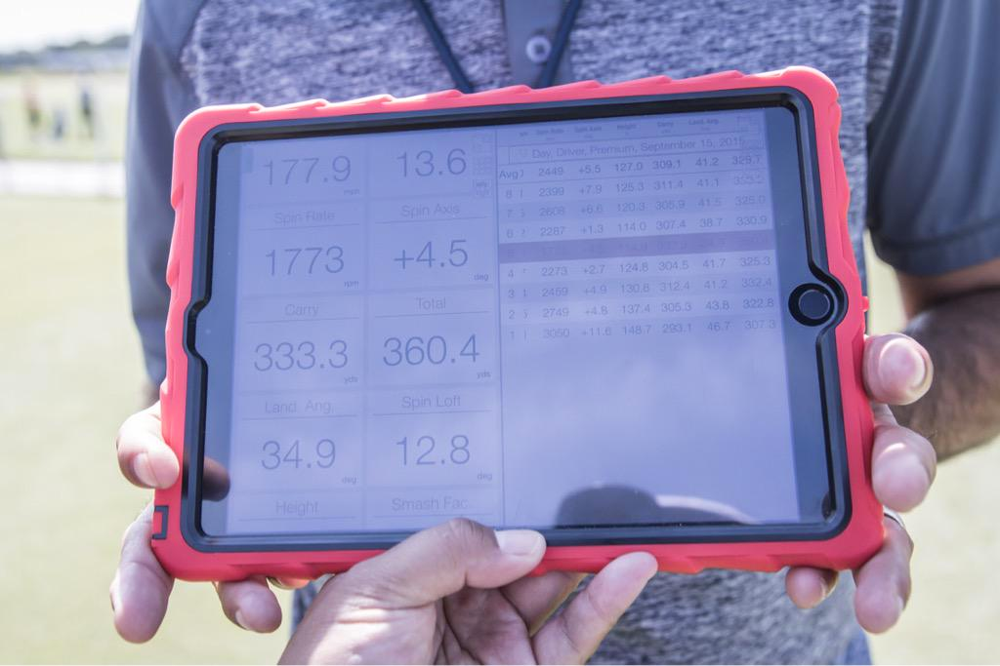
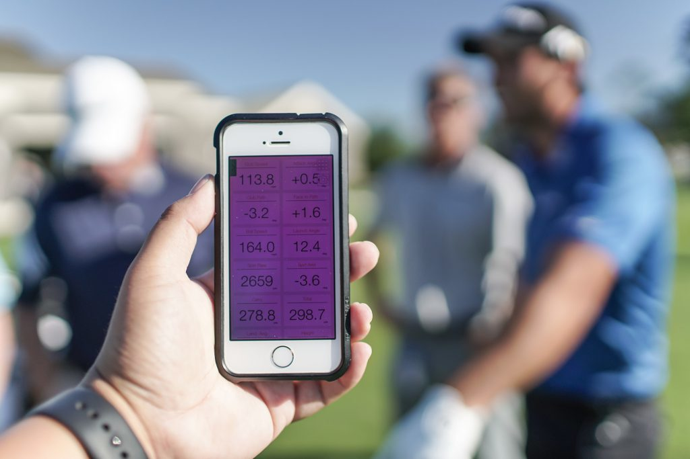
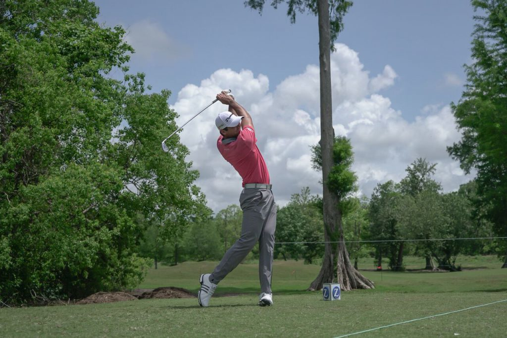
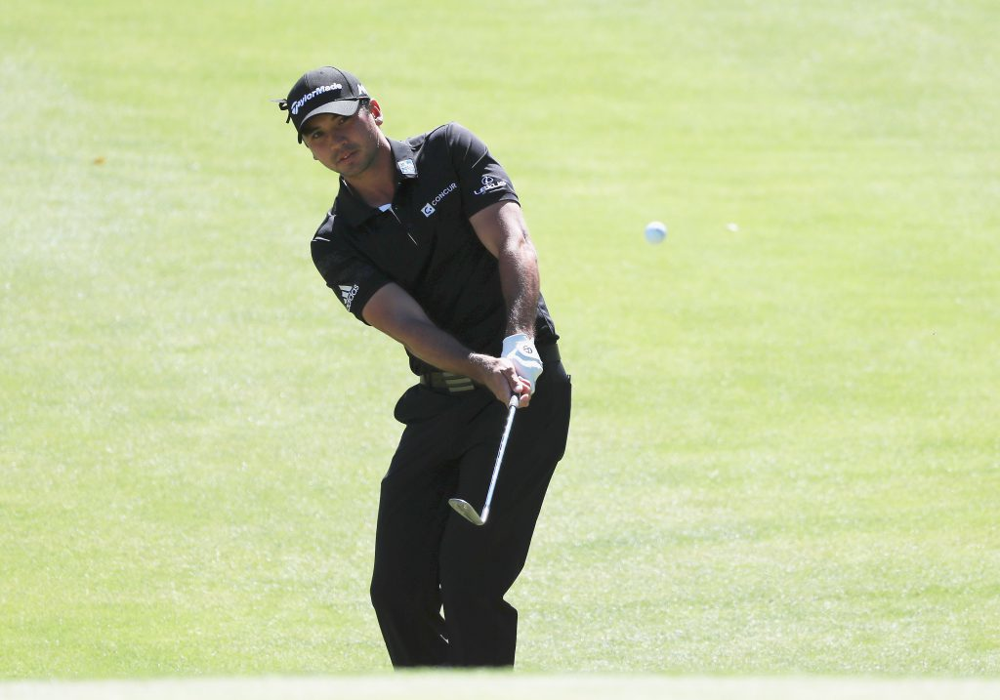
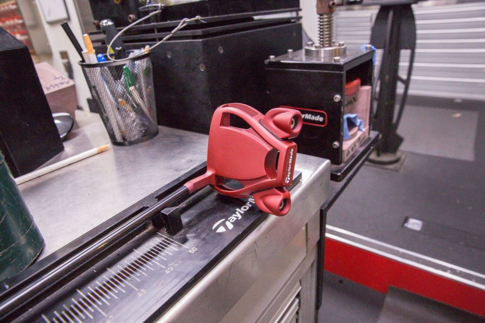

With any athlete, winning is never automatic—it is a long and rigorous process that requires passion, dedication, and determination. Despite Jason’s success in the 2015 PGA Tour season, even the best player in the world needs to continuously improve and embrace all the tools that provide optimized performance. Throughout this season, Jason has been meticulous with testing new equipment—from drivers to putters—to find an advantage against the field that he can leverage to continue his winning ways.
To capture the process that the World No.1 has gone through ahead of his win at THE PLAYERS Championship, here is an in-depth overview of the development of Jason’s bag:
Driver
M1 460cc 10.5* Driver with Mitsubishi KuroKage S TiNi 70X shaft tipped 1"
Key Stat: 311.5 Driving Average (1st)

A snapshot of M1's potential in the hands of Jason Day.
Jason was first introduced to the M1 two months before it was released to the golf world in September of 2015. The lightweight carbon crown allowed us to place more mass even lower and more forward than ever, which is perfect for a player like Jason. The first tournament after the M1 was introduced to the public was the 2015 BMW Championship. Jason put it in play for the first time that week… and won. He’s been playing it ever since.
Fairway
M2 17° 3-Wood with Mitsubishi Rayon KuroKage S TiNi 80X shaft tipped 1.5″
Key Stat: 11.157 in Strokes Gained Tee to Green (3rd)

Jason Day's UnFairway numbers.
Jason first tried the M2 fairway at a photo shoot earlier this year and couldn’t believe how hot it was performing. The lower CG of the M2 fairway resulted in less spin off the tee, which had Jason carrying it 285 to a total distance of 295-300 yards. Off the deck, he was still carrying it closer to 265 yards (275 yards total), which better aligns with his traditional 3-wood gapping. Essentially, the M2 fairway has given Jason more distance where it matters most—off the tee, which is why he coined it the “UnFairway.”

Jason ripping his RSi TP irons.
Irons
RSi TP 4-PW + RSi 2-iron with True Temper Dynamic Gold X7 shafts
Key Stat: 72.22% (52/72) of Greens in Regulation (T15)
Day rotates between a UDI (Ultimate Driving Iron), RSi TP, and RSi 2 2-iron. This week he played the RSi2 2-iron. Whichever he games is primarily a result of turf conditions for optimized distance. When Jason arrived to the course on Monday, the RSi 2 2-iron was performing the best, yielding some serious roll-out despite the soft conditions.
Jason still games RSi TP as they have a bit more offset than PSi Tour, helping Jason move the ball right-to-left, which is his ideal shot shape. That being said, Jason loves technology and will take all the forgiveness he can get, which has him interested in PSi Tour. On the Monday heading into THE PLAYERS, Jason requested a set of PSi Tour bent for more offset to take advantage the improved sound and feel that PSi provides. We wouldn’t be surprised to see them in the bag in the near future.
Day’s iron shafts are also a testament to him as an athlete. He used to game Project X Rifle shafts but wanted something to reduce spin and launch. True Temper essentially built a Dynamic Gold X100 on steroids, which are the Dynamic Gold X7 shafts Jason plays today. The X7s are stiffer, heavier and designed for extremely strong golfers with abnormally high club head speeds.
Wedges
Tour Preferred EF 47° Tour Grind + 52° & 60° ATV Grind with True Temper Dynamic Gold Tour Issue S400 shafts
Key Stat: 85.71% (6/7) in Sand Saves (T4)

Day was one of the first players to arrive at TPC Sawgrass where he spent all day Monday dialing in his wedges.
Day has played Tour Preferred EF wedges since last season. While his lofts vary from tournament to tournament, he rarely games a 60° wedge. However, he decided to add it into his bag for THE PLAYERS considering the small greens at TPC Sawgrass. Missing a green at Sawgrass requires shots to get up quick and stop fast, and the 60° Tour Preferred EF gave him the best opportunity to execute such a shot.
Putter
Red Spider Limited Putter
Key Stat: 1.450 in Strokes Gained Putting (8th)

Jason Day's Spider Limited Red Putter
The last thing we expected Jason to change after his breakout 2015 season was his putter. After finishing #2 in putting average last year, Jason reached out to our putter development team with a special request at the end of the season. Jason has long loved the color red. Not only is red donned by the Australian flag, but it also has a tie to an infamous Australian arachnid–the Redback Spider. Gaming an Itsy Bitsy Spider putter, Jason thought it would be cool to pay homage to the Redback by adding a matte red finish to an Itsy Bitsy Spider putter. For Jason to win with the Spider Limited Red after only two tournaments leads us to believe it has earned a spot in the bag for good.
Golf Ball
Tour Preferred X #87 Golf Ball
Key Stat: 16.956 Strokes Gained on the field (1st)
Jason Day didn’t think twice about upgrading to the 2016 Tour Preferred X when we introduced it earlier this season. All TaylorMade Tour athletes who play are golf ball genuinely love it. Jason’s game is ideal for the Tour Preferred X as he needs minimal spin with his long irons considering how hard and high he hits it. Having less spin with irons is key for players who hit it high and far in order to keep control of their golf ball. He also stamps his ball with a kangaroo to pay homage to his home country of Australia. He also dons the #87 for his year of birth.
Player History
Jason Day, born November 12, 1987, is an Australian professional golfer and PGA Tour member. He is the current World Number 1 in the World Golf Ranking, having first achieved the ranking in September 2015 . Day first broke into the world's top ten in June 2011, rising to world number nine after his runner-up finish at the U.S. Open. In February 2014, Day won his first WGC title, the WGC-Accenture Match Play Championship and would win it for a second time in 2016. With his 2016 win, he joined the elite company of Tiger Woods and Geoff Ogilvy as the only multiple winners of the WGC Match Play. He went on to win his first major tournament at the 2015 PGA Championship, scoring a record 20 strokes under par and rising to number three in the world rankings.